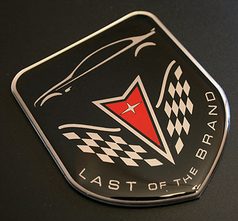

History of Pontiac(the car brand)

Intro
Did you know we have Cadillac to thank for the birth of Pontiac? Actually, we have many people to thank for the birth of this legendary automobile manufacturer, but the story begins with two gentlemen -- Edward Murphy and Alanson Brush. Murphy was the founder of a buggy company in Pontiac, Michigan. They produced horse-drawn carriages, and like others in their field, they wanted to evolve into the automotive age.
Link HereThe Birth of the Pontiac
Brush, the designer of early Cadillacs, became an engineering consultant in Detroit. When the two met in 1906, Brush showed Murphy his design for a small two-cylinder car that Cadillac had rejected. Murphy bought into Brush’s idea and decided it should carry the name “Oakland” as did his horse-drawn vehicles.
During the summer of 1907, Murphy organized the Oakland Motor Car Co. His lack of sales with the Oakland, a two-cylinder vertical engine that rotated counterclockwise, convinced him that Cadillac might have been right in rejecting the Brush design. In 1909, they introduced a line of 40 HP four-cylinder cars with sliding gear transmissions. Although this innovation was successful Edward Murphy didn’t see the increased sales due to his sudden death in 1908. Shortly before his passing, Murphy had met with another former buggy man named William C. Durant.
Soon afterward, Oakland became part of Durant’s General Motors Empire and its design would evolve under his rule. The company produced Oakland’s most recognized model in 1924, the “True Blue Oakland Six” which came with a new L-head engine, four-wheel brakes, centralized controls and an automatic spark advance. They painted the cutting edge automobile with a Blue Duco nitro-cellulose lacquer. In 1926, Alfred R. Glancy, Oakland’s assistant general manager introduced the Pontiac. The quality six-cylinder engine cars designed to sell for the price of a four. The automobile became an instant success and Pontiac had been born.
Link HerePontiac's Midlife "Not a Crisis"
Pontiac had problems carving out its niche among the other General Motors brands. However, many believe they did a better job than the rocket line of automobiles from Oldsmobile. In America, they marketed Pontiac as the affordable and sporty division of GM. In Canada, the automobile line sold well as a wise economic choice without sacrificing power. The 50s era Pontiac Star Chief had a problem keeping up with the Tri-five Chevrolet Bel Air from the same time period in units sold.However, Pontiac did outperform Oldsmobile and Buick for most of the 50s. As the muscle car wars heated up through the 60s and 70s Pontiac held its ground with powerful automobiles like the Tempest, GTO, Firebird and Trans Am. If you needed a car with room for the whole family, yet capable of getting out of its own way, Pontiac had you covered with the Lemans, Catalina and the Bonneville.
Link HereDecades of Decline
When American car companies found it necessary to reduce compression ratios, so the automobiles could meet stricter emission requirements and burn unleaded fuels, Pontiac struggled a little more than other GM brands. It's hard to say your car represents power and value when these things are no longer true. Through 1981, the Pontiac Firebird Trans Am hood decal got bigger each year. Unfortunately, the engine was getting smaller and developing less horsepower.
The 1980s would represent a dark period of time for all of GM. Even the mighty Cadillac division considered recession-proof, because of its upscale clientele started building questionable cars. The early 80s Cadillac Eldorado with the HT 4100 is a good example of this. Pontiac went on to launch the Fiero in 1984. It had a horrendous start and the company gave up on the little sports car just as it turned the corner in performance, value, and reliability.